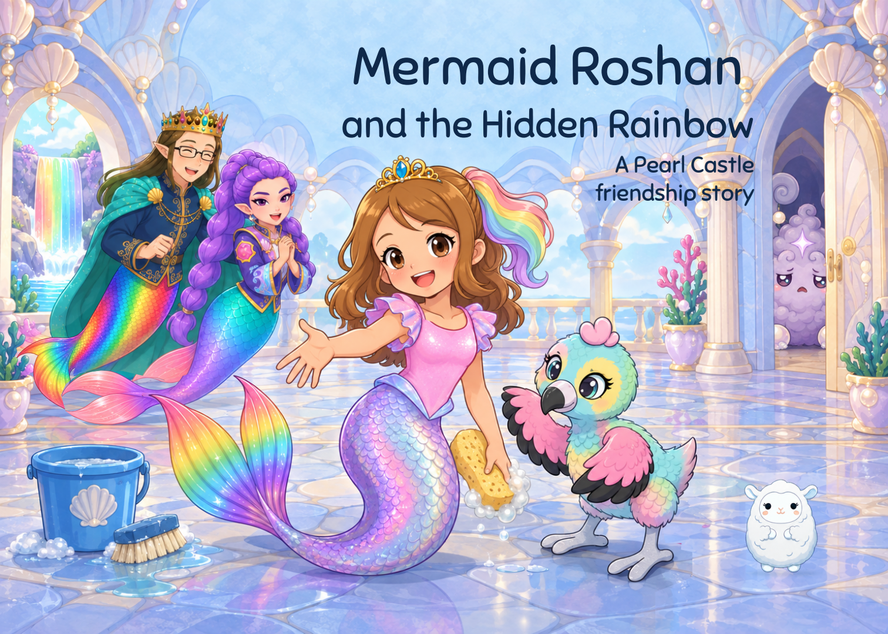
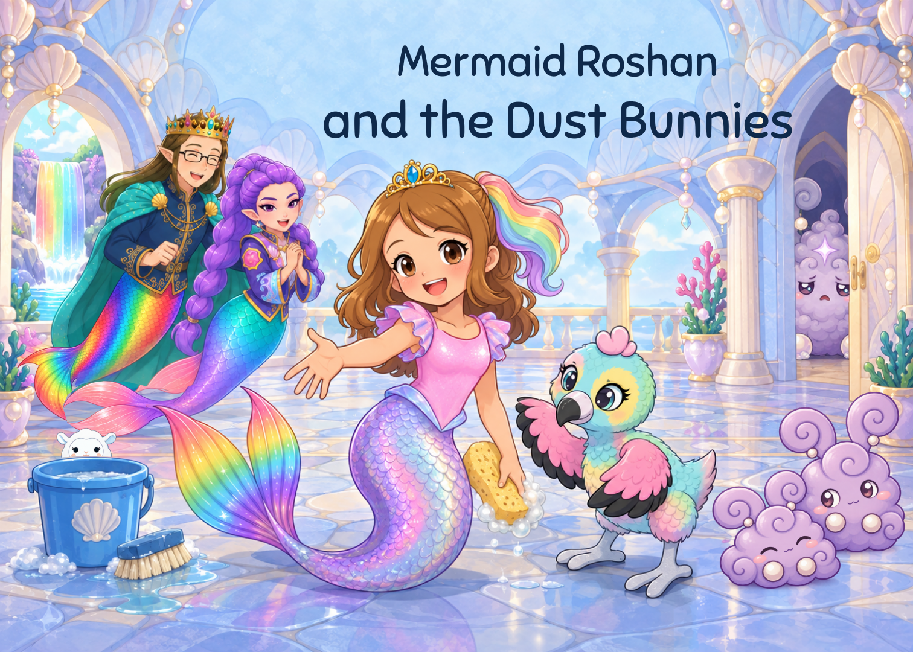

V43 cover review. Existing family/castle art, prominent lavender bunnies and hidden Lamma. No body-page edits. Read the revised book


Owner cover acceptance, child/SLP and physical print remain open. Arrival is still a mixed-width review; physical pagination and gutter held.